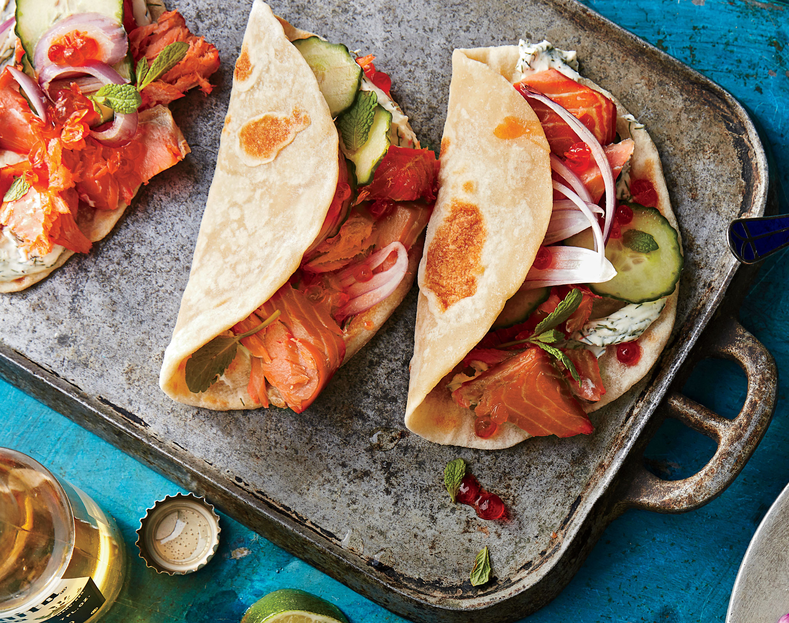

Pacific Northwest smoked salmon tacos

Taco lover? check out this Pacific Northwest smoked salmon tacos recipe
For a fun twist on taco night, serve up a platter of these flavorful salmon tacos. Full of flavor and easy to make, you'll be sure to want to add this delicious dish to the dinner rotation.
Ingredients
- 8 ounces cream cheese, softened
- 2 tablespoons chopped fresh dill
- 2 teaspoons lemon zest plus 1 Tbsp. fresh juice (about 1 lemon)
- ½ teaspoon kosher salt
- ¼ teaspoon black pepper
- 16 (6-in.) flour tortillas, warmed
- 1 pound hot smoked salmon, flaked into bite-size pieces
- 8 ounces thinly sliced English cucumber (about 1 1/2 cups)
- ¼ cup thinly sliced shallot (about 1 medium)
- 16 teaspoons salmon roe
- 2 tablespoons torn mint leaves
Steps
- Stir together cream cheese, dill, lemon zest, lemon juice, salt, and pepper in a medium bowl.
- Divide cream cheese mixture evenly among tortillas. Top tortillas evenly with smoked salmon, cucumber, shallot, and salmon roe. Sprinkle evenly with mint leaves.
Home